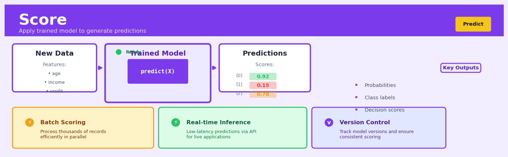

Score#


The most common mistake teams make with scoring is treating it as a one-time deployment step when it actually requires continuous monitoring for data drift and model degradation. Always implement feature schema validation before scoring because production data will inevitably have subtle differences from training data that can silently destroy model performance. Remember that scoring speed matters more than you think—a model that's 2% more accurate but 10x slower will often lose out to a faster alternative in production environments.
The 60-Second Version#
What it does: Scoring applies your trained model to new data to generate predictions—like running your fraud detector on today’s transactions or your churn model on this month’s customers.
When to use it: Use scoring whenever you need predictions on new observations after your model is trained, whether that’s batch predictions on thousands of customers overnight or real-time predictions as transactions arrive.
What you get back: You receive predictions for each observation—probabilities and classifications (like “80% likely to churn, classify as high-risk”) or continuous values (like “predicted revenue: $3,450”)—that directly inform business decisions and automated actions.
At a Glance:
Difficulty |
Easy |
Typical runtime |
Milliseconds per row (real-time) to minutes for millions of rows (batch) |
What you bring |
A trained model and new data with the same features used in training |
What you get |
Predictions for each observation: probabilities, class labels, or continuous values |
Heuristix bucket |
Predict — Machine Learning & Forecasting |
Your model is only as reliable as the data it was trained on—if new data looks different, predictions become unreliable.
Learning Objectives#
After reading this chapter, a business user will be able to:
Identify opportunities where applying a trained model to score new customer records, transactions, or events will generate business value more efficiently than manual judgment or rules-based systems.
Interpret prediction outputs—including class labels, probability scores, and confidence intervals—and translate these technical results into business language that explains risk levels, expected outcomes, and recommended actions to non-technical stakeholders.
Decide which predictions warrant immediate action, which require human review, and which can be automated, based on probability thresholds, business costs of errors, and operational constraints.
After reading this chapter, a data scientist will be able to:
Implement scoring pipelines that correctly handle preprocessing, feature engineering, missing values, and data type mismatches between training and production data to ensure predictions match expected model behavior.
Configure probability thresholds and decision boundaries by analyzing precision-recall trade-offs, business cost matrices, and population differences between training and scoring datasets to optimize for specific business objectives.
Diagnose scoring failures including distribution drift, feature leakage, latency issues, and degraded prediction quality by implementing monitoring checks, validating input data quality, and comparing score distributions against baseline expectations.
Overview#
Score is the inference operation in supervised machine learning that applies a trained predictive model to new, previously unseen observations to generate predictions. It transforms a fitted model artifact—learned during the training phase—into actionable predictions: class labels and probabilities for classification tasks, or continuous values for regression tasks. Scoring belongs to the operational deployment family of machine learning methods, representing the transition from model development to production value generation.
When to Use This#
Use this when you have a trained, validated model and need to generate predictions for new records that were not part of training or validation—for example, scoring this month’s customer base for churn propensity after training on historical data.
Use this when you need to operationalise a model in a batch process, such as generating weekly credit risk scores for all active loan applications in your portfolio.
Use this when your business process requires pre-computed predictions stored in a database or data warehouse for downstream consumption by reporting tools, marketing systems, or case management workflows.
Use this when you need probability estimates rather than just class labels—for instance, when building a prioritised outreach list ranked by likelihood to convert.
Use this when integrating machine learning into a larger analytical pipeline where predictions become features or inputs for subsequent decision logic or additional models.
Use this when you need to apply the same model across multiple datasets or time periods consistently, ensuring that scoring logic remains identical across all applications.
Do NOT use this when you are still in the model development phase and need to evaluate model performance—use cross-validation or holdout validation instead, which provide unbiased performance estimates.
Do NOT use this when your input data schema has drifted significantly from the training data schema—feature names, types, or distributions that differ substantially will produce unreliable or erroneous predictions.
Do NOT use this when the model has not been properly validated on representative holdout data—scoring with an overfit or poorly calibrated model propagates errors into business decisions.
Do NOT use this when real-time, low-latency predictions are required with sub-millisecond response times—batch scoring is designed for throughput, not latency-critical applications.
Questions This Answers#
Customer and Revenue Decisions#
Will this lead convert to a paying customer in the next 30 days?
Which of these 50,000 customers are most likely to churn before their renewal date?
What’s the expected lifetime value of customers we acquired through our new digital channel?
Should we approve this loan application, and what interest rate should we offer?
Which customers should we target with our $500K retention campaign to get the best ROI?
Operational Forecasting#
How much inventory do we need at each warehouse next month to avoid stockouts without over-ordering?
What will our actual sales be in Q4 — can we confidently commit to the board’s 12% growth target?
Are we going to hit our production targets this week, or should we schedule overtime now?
What’s the predicted delivery time for this order based on current conditions?
Risk and Quality Management#
Which transactions in today’s batch are fraudulent and need immediate review?
Is this insurance claim likely legitimate or should it go to our investigations team?
Which equipment is most likely to fail in the next two weeks so we can schedule preventive maintenance?
Will this manufacturing batch meet quality standards or should we adjust the process parameters now?
What’s the probability this patient will be readmitted within 30 days of discharge?
How It Works#
Imagine you’ve spent months training a barista named Maya to make perfect espresso drinks. You’ve shown her hundreds of examples: “This customer ordered oat milk and left a big tip—they’re health-conscious and generous,” or “This person ordered extra shots at 7am—they’re sleep-deprived and in a hurry.” Maya learned the patterns. Now, when a new customer walks in—someone she’s never seen before—she doesn’t need you anymore. She looks at their order (large decaf cappuccino, extra foam), checks her mental model of what she’s learned, and instantly predicts: “They’ll probably ask for the pastry menu and sit for an hour.” That’s scoring. Maya isn’t learning anything new; she’s applying everything she already learned to make predictions about brand-new situations.
TRAINED MODEL + NEW DATA → PREDICTIONS
Step 1: Load the trained model
┌─────────────────────────────┐
│ Trained Model (artifact) │ ← Created during training
│ • Learned patterns │
│ • Decision boundaries │
│ • Weights & coefficients │
└─────────────────────────────┘
Step 2: Feed in new observations
┌──────────────┬──────────┬─────────┐
│ Customer ID │ Feature │ Feature │ ← New, unseen data
├──────────────┼──────────┼─────────┤
│ 9847 │ 45.2 │ "Yes" │
│ 9848 │ 22.7 │ "No" │
│ 9849 │ 38.1 │ "Yes" │
└──────────────┴──────────┴─────────┘
↓
Step 3: Model processes each row
[Apply learned rules]
↓
┌──────────────┬─────────────┬─────────────┐
│ Customer ID │ Prediction │ Probability │ ← Output
├──────────────┼─────────────┼─────────────┤
│ 9847 │ "Will buy"│ 0.87 │
│ 9848 │ "Won't buy"│ 0.23 │
│ 9849 │ "Will buy"│ 0.72 │
└──────────────┴─────────────┴─────────────┘
Load the trained model into memory. The scoring process begins by retrieving the model artifact—the compressed representation of everything learned during training. For a customer churn model, this might contain rules like “if usage dropped 40% and no support calls, high churn risk” or specific numerical weights that quantify each factor’s importance. This model sits dormant, waiting for new data.
Prepare the new observations. Fresh data arrives—maybe today’s transactions or this week’s sensor readings. Each observation must have the exact same features (columns) the model was trained on. If the model learned from age, income, and purchase history, every new record needs those three pieces of information in the same format.
Feed each observation through the model. The model examines the new data point-by-point, applying its learned logic. For a decision tree model, this means following branches based on each feature’s value. For a neural network, it means multiplying inputs by learned weights and passing results through layers. The model doesn’t change or learn—it just calculates based on fixed rules.
Generate predictions for every observation. The model outputs its answer: a category label for classification (“approved” or “denied”), a number for regression (“$47,200 expected revenue”), or probabilities for each possible outcome (“73% likely to click, 27% likely to ignore”). These predictions flow out row-by-row, matching the order of input observations.
Return the scored dataset. The output is typically your original new data with prediction columns added. Now each customer, transaction, or event has an actionable forecast attached. This scored data feeds directly into business processes—flagging fraud alerts, personalizing recommendations, or prioritizing sales leads.
The key insight: Scoring transforms expensive model training into an infinitely reusable prediction engine, allowing organizations to generate real-time intelligence on unlimited new data without ever retraining.
The Intuition#
Imagine you have spent months developing a medical diagnostic protocol. You have studied thousands of patient cases, identified the key symptoms and test results that predict a particular disease, and codified this knowledge into a systematic decision procedure. The protocol now exists as a documented set of rules and thresholds. When a new patient arrives, you do not re-derive the entire diagnostic framework from scratch—you simply apply the existing protocol to their specific symptoms and test results to reach a diagnosis. This application step is scoring.
The model training phase is where all the hard statistical work happens: estimating parameters, learning decision boundaries, and capturing the complex relationships between input features and target outcomes. This produces a model artifact—a mathematical object containing learned coefficients, tree structures, support vectors, or neural network weights. Scoring is the straightforward but operationally critical step of taking this artifact and computing the output it produces for new input vectors.
Consider a credit card fraud detection system. During training, the model learned that certain combinations of transaction amount, merchant category, time of day, and geographic distance from the cardholder’s home are associated with fraudulent activity. The learned model encapsulates millions of historical transactions’ worth of pattern recognition. When a new transaction arrives, scoring simply feeds that transaction’s features through the learned function to produce a fraud probability. The computational complexity of scoring is typically linear in the number of features and records—vastly simpler than the optimisation performed during training. This asymmetry between training complexity and scoring simplicity is what makes machine learning operationally viable at scale.
The Mathematics#
Formal Problem Setup#
Let \(f_{\hat{\theta}}: \mathcal{X} \rightarrow \mathcal{Y}\) denote a trained model with learned parameters \(\hat{\theta}\), where \(\mathcal{X} \subseteq \mathbb{R}^p\) is the \(p\)-dimensional feature space and \(\mathcal{Y}\) is the target space. For regression, \(\mathcal{Y} = \mathbb{R}\); for \(K\)-class classification, \(\mathcal{Y} = \{1, 2, \ldots, K\}\).
Given a new dataset \(\mathbf{X}_{\text{new}} \in \mathbb{R}^{n \times p}\) containing \(n\) observations, the scoring operation computes:
where \(\mathbf{x}_i \in \mathbb{R}^p\) denotes the \(i\)-th row of \(\mathbf{X}_{\text{new}}\).
Classification Scoring#
For classification models, we distinguish between hard predictions (class labels) and soft predictions (probabilities).
Probability Estimation#
Most classifiers produce a scoring function \(s_{\hat{\theta}}: \mathcal{X} \rightarrow \mathbb{R}^K\) that outputs raw scores for each class. These are converted to probabilities via appropriate link functions.
For binary classification with logistic regression, the probability of the positive class is:
where \(\sigma(\cdot)\) is the logistic sigmoid function and \(\hat{\boldsymbol{\beta}} \in \mathbb{R}^p\) are the learned coefficients.
For multi-class classification via softmax (multinomial logistic regression):
These probabilities satisfy \(\sum_{k=1}^{K} \hat{P}(Y = k \mid \mathbf{x}) = 1\) and \(\hat{P}(Y = k \mid \mathbf{x}) \geq 0\) for all \(k\).
Hard Classification via Decision Rules#
The predicted class label is typically obtained by:
For binary classification with asymmetric costs, a threshold \(\tau \in (0, 1)\) may be applied:
The optimal threshold under a cost structure with false positive cost \(c_{FP}\) and false negative cost \(c_{FN}\) satisfies:
Regression Scoring#
For regression models, scoring produces point predictions \(\hat{y}_i = f_{\hat{\theta}}(\mathbf{x}_i)\).
For linear regression:
Many regression models also provide prediction intervals. For linear regression under Gaussian assumptions, the \((1-\alpha)\) prediction interval for a new observation \(\mathbf{x}_0\) is:
where \(\hat{\sigma}\) is the residual standard error and \(t_{n-p-1, \alpha/2}\) is the appropriate \(t\)-distribution quantile.
Tree-Based Model Scoring#
For decision trees, scoring involves traversing the tree structure:
where \(R_1, \ldots, R_M\) are the terminal node regions forming a partition of \(\mathcal{X}\), and \(c_m\) is the predicted value (class proportion or mean) in region \(m\).
For ensemble methods (Random Forests, Gradient Boosting), the prediction aggregates across \(B\) base learners:
Assumptions#
Covariate consistency: The feature space at scoring time must match training—same variables, same encoding, same scaling.
No extrapolation: The model is reliable only within the support of the training distribution. For \(\mathbf{x}\) far from the training data manifold, predictions are extrapolations with no statistical guarantee.
Stationarity: The relationship \(P(Y \mid \mathbf{X})\) learned during training remains valid at scoring time. Concept drift violates this assumption.
Missing data handling: The scoring procedure must handle missing values consistently with training (imputation, indicator variables, or native handling).
Edge Cases and Degenerate Conditions#
Perfect separation in logistic regression: Coefficients diverge to infinity; predicted probabilities collapse to 0 or 1.
Extrapolation in polynomial regression: Predictions become unstable outside the training range.
Unseen categorical levels: Categories not present during training have no learned representation.
Understanding the Mathematics#
Linear Regression Prediction#
The equation: $\(\hat{y} = \beta_0 + \beta_1 x_1 + \beta_2 x_2 + \ldots + \beta_p x_p\)$
Read it aloud: The predicted value equals the intercept plus the first coefficient times the first feature, plus the second coefficient times the second feature, and so on for all features.
What each symbol means:
\(\hat{y}\) = the predicted output value (what we’re trying to estimate)
\(\beta_0\) = the intercept (baseline prediction when all features are zero)
\(\beta_1, \beta_2, \ldots, \beta_p\) = coefficients (learned weights for each feature)
\(x_1, x_2, \ldots, x_p\) = input features (the new data we’re scoring)
\(p\) = total number of features
A concrete numerical example: Predicting house price. Our trained model learned: \(\beta_0 = 50000\), \(\beta_1 = 150\) (for square footage), \(\beta_2 = 20000\) (for number of bedrooms). A new house has 1,200 sqft and 3 bedrooms.
The predicted price is $290,000.
Why this equation matters: This transforms trained coefficients into actual business predictions—without it, your model is just a collection of numbers with no operational value.
Logistic Regression Prediction#
The equation: $\(P(y=1|x) = \frac{1}{1 + e^{-(\beta_0 + \beta_1 x_1 + \ldots + \beta_p x_p)}}\)$
Read it aloud: The probability that the outcome equals one given the features equals one divided by one plus e raised to the negative of the linear combination of intercept and weighted features.
What each symbol means:
\(P(y=1|x)\) = probability the outcome is positive class (given the input features)
\(e\) = Euler’s number, approximately 2.718 (the base of natural logarithm)
\(\beta_0, \beta_1, \ldots, \beta_p\) = trained coefficients
\(x_1, \ldots, x_p\) = input features
A concrete numerical example: Predicting customer churn. Our model learned: \(\beta_0 = -2.5\), \(\beta_1 = 0.8\) (for customer service calls), \(\beta_2 = -0.3\) (for contract length in months). New customer has 5 service calls and a 12-month contract.
Linear part: \(-2.5 + (0.8 \times 5) + (-0.3 \times 12) = -2.5 + 4 - 3.6 = -2.1\)
The churn probability is 10.9%.
Why this equation matters: The sigmoid transformation squashes any linear combination into a valid probability between 0 and 1, making predictions interpretable as confidence levels for business decisions.
Decision Tree Path Evaluation#
The equation: $\(\hat{y} = \text{leaf\_value}(x) = \text{mean}(y_{\text{training samples in leaf}})\)$
Read it aloud: The predicted value equals the leaf value where the input lands, which equals the average of all training sample outputs that reached that same leaf node.
What each symbol means:
\(\hat{y}\) = predicted value for new observation
\(\text{leaf\_value}(x)\) = the value stored at whichever leaf node input \(x\) reaches
\(y_{\text{training samples in leaf}}\) = actual outcomes from training data that satisfied the same decision path
A concrete numerical example: Predicting loan default amount. A new applicant follows the tree: income < \(45K? Yes. Age > 28? No. This lands in Leaf #3, which during training contained 23 customers who defaulted with amounts: \)1,200, \(800, \)1,500, $950, etc.
Average of those 23 values = $1,150.
The predicted default amount is $1,150.
Why this equation matters: Trees make predictions by finding historical precedents—observations that share the same critical characteristics—rather than computing weighted combinations.
The Big Picture#
The mathematics of scoring executes a fundamentally simple task: apply learned relationships to new data. For linear models, this means multiplying learned weights by new feature values and summing them. For classification, we add a transformation to convert scores into probabilities. For tree-based models, we navigate decision rules to reach historical averages. This mathematical approach was chosen because it’s deterministic, fast, and preserves exactly what was learned during training—no information is lost or distorted between training and deployment. At its core, scoring mathematics is nothing more than substitution: plug new values into the pattern the model discovered, then compute the result.
Python Implementation#
import numpy as np
import pandas as pd
from sklearn.datasets import make_classification
from sklearn.model_selection import train_test_split
from sklearn.ensemble import RandomForestClassifier
from sklearn.linear_model import LogisticRegression
from sklearn.preprocessing import StandardScaler
from sklearn.pipeline import Pipeline
import joblib
# =============================================================================
# Example 1: Classification Scoring with Probability Outputs
# =============================================================================
# Generate synthetic customer churn dataset
X, y = make_classification(
n_samples=5000,
n_features=10,
n_informative=6,
n_redundant=2,
n_classes=2,
weights=[0.7, 0.3], # Imbalanced: 70% non-churners
random_state=42
)
# Create meaningful feature names
feature_names = [
'tenure_months', 'monthly_charges', 'total_charges', 'num_support_tickets',
'contract_length', 'payment_method_score', 'service_usage', 'loyalty_points',
'age', 'income_bracket'
]
X_df = pd.DataFrame(X, columns=feature_names)
# Split into training, validation, and scoring datasets
X_train, X_temp, y_train, y_temp = train_test_split(
X_df, y, test_size=0.4, random_state=42, stratify=y
)
X_val, X_score, y_val, y_score = train_test_split(
X_temp, y_temp, test_size=0.5, random_state=42, stratify=y_temp
)
print(f"Training set: {len(X_train)} records")
print(f"Validation set: {len(X_val)} records")
print(f"Scoring set: {len(X_score)} records (simulates new, unlabeled data)")
# Train a Random Forest classifier
rf_model = RandomForestClassifier(
n_estimators=100,
max_depth=10,
min_samples_leaf=20,
random_state=42,
n_jobs=-1
)
rf_model.fit(X_train, y_train)
# Validate model performance (separate from scoring)
val_accuracy = rf_model.score(X_val, y_val)
print(f"\nValidation accuracy: {val_accuracy:.4f}")
# =============================================================================
# SCORING: Apply the trained model to new data
# =============================================================================
# Generate class predictions (hard labels)
y_pred_class = rf_model.predict(X_score)
# Generate probability predictions (soft scores)
y_pred_proba = rf_model.predict_proba(X_score)
# Create a scored dataset with all outputs
scored_df = X_score.copy()
scored_df['predicted_class'] = y_pred_class
scored_df['prob_no_churn'] = y_pred_proba[:, 0] # Class 0 probability
scored_df['prob_churn'] = y_pred_proba[:, 1] # Class 1 probability
# Apply custom threshold (e.g., for cost-sensitive decisions)
custom_threshold = 0.35 # Lower threshold to catch more potential churners
scored_df['predicted_at_035'] = (scored_df['prob_churn'] >= custom_threshold).astype(int)
print("\n--- Scored Dataset Sample (first 10 rows) ---")
print(scored_df[['tenure_months', 'monthly_charges', 'prob_churn',
'predicted_class', 'predicted_at_035']].head(10).to_string())
# Summary statistics of predictions
print("\n--- Prediction Distribution ---")
print(f"Predicted churners (default threshold): {(y_pred_class == 1).sum()} ({(y_pred_class == 1).mean()*100:.1f}%)")
print(f"Predicted churners (0.35 threshold): {scored_df['predicted_at_035'].sum()} ({scored_df['predicted_at_035'].mean()*100:.1f}%)")
print(f"\nProbability statistics:")
print(scored_df['prob_churn'].describe())
# =============================================================================
# Example 2: Scoring with a Pipeline (includes preprocessing)
# =============================================================================
# Create a pipeline that includes scaling
pipeline = Pipeline([
('scaler', StandardScaler()),
('classifier', LogisticRegression(max_iter=1000, random_state=42))
])
# Train the pipeline
pipeline.fit(X_train, y_train)
# Score new data through the pipeline (preprocessing applied automatically)
pipeline_predictions = pipeline.predict_proba(X_score)
scored_df['logistic_prob_churn'] = pipeline_predictions[:, 1]
print("\n--- Model Comparison ---")
print(scored_df[['prob_churn', 'logistic_prob_churn']].describe())
# =============================================================================
# Example 3: Saving and Loading Models for Production Scoring
# =============================================================================
# Save the trained model
model_path = 'churn_model.joblib'
joblib.dump(rf_model, model_path)
print(f"\nModel saved to: {model_path}")
# Load the model (simulating a new scoring session)
loaded_model = joblib.load(model_path)
# Score with loaded model
loaded_predictions = loaded_model.predict_proba(X_score)
print(f"Predictions match: {np.allclose(y_pred_proba, loaded_predictions)}")
# =============================================================================
# Example 4: Regression Scoring with Prediction Intervals
# =============================================================================
from sklearn.datasets import make_regression
from sklearn.linear_model import LinearRegression
from sklearn.ensemble import GradientBoostingRegressor
# Generate synthetic sales prediction dataset
X_reg, y_reg = make_regression(
n_samples=2000, n_features=8, noise=15, random_state=42
)
X_reg_train, X_reg_score, y_reg_train, _ = train
## Visualisations


## Using This in Heuristix
### What You'll Need
The Score node takes two inputs: your **trained model** (from a Train node) and **new data** to score. Your new data should have the exact same feature columns that you used during training—same names, same data types. The target column is optional; include it if you want to evaluate predictions against known outcomes, omit it for true production scoring.
**Example input data:**
| customer_id | age | income | tenure_months |
|-------------|-----|--------|---------------|
| C1001 | 34 | 52000 | 18 |
| C1002 | 45 | 78000 | 36 |
**Example output (classification):**
| customer_id | age | income | tenure_months | predicted_class | probability_0 | probability_1 |
|-------------|-----|--------|---------------|-----------------|---------------|---------------|
| C1001 | 34 | 52000 | 18 | 1 | 0.23 | 0.77 |
| C1002 | 45 | 78000 | 36 | 0 | 0.82 | 0.18 |
### Configuration Parameters
| Parameter | What It Does | Default | When to Change |
|-----------|-------------|---------|----------------|
| **Model Input** | The trained model to apply | (required) | Select your trained model from the upstream Train node |
| **Include Probabilities** | Add probability columns for each class | Yes | Turn off if you only need the predicted class and want simpler output |
| **Probability Threshold** | Classification cutoff for positive class (0–1) | 0.5 | Adjust to 0.3–0.4 for catching more positives (higher recall) or 0.6–0.7 for more precision |
| **Prediction Column Name** | Name for the prediction output | "predicted" | Change to something descriptive like "churn_prediction" or "risk_score" |
| **Pass Through Columns** | Which original columns to keep | All | Deselect training features if you only want IDs and predictions in output |
### What You'll Get
**For Classification:**
- **Predicted class column**: The winning category for each observation
- **Probability columns**: One column per class showing confidence scores (sum to 1.0 per row)
- **Prediction summary**: A distribution chart showing how many observations fell into each predicted class
- **Confusion matrix** (if target included): Visual comparison of predicted vs. actual values
**For Regression:**
- **Predicted value column**: The continuous prediction for each observation
- **Prediction distribution**: Histogram showing the range and frequency of predicted values
- **Error metrics** (if target included): MAE, RMSE, and R² displayed in the results panel
### Quick Start
1. **Connect your trained model** by dragging from a Train node to the Score node's model input port
2. **Connect your new data** to the data input port (ensure it matches your training features)
3. **Keep the default settings** for your first run—they work for 80% of use cases
4. **Run the node** and examine the output table with predictions
5. **Connect to a Write node** to export results, or to a Filter node to act on high-confidence predictions
### Connecting Downstream
Most commonly, you'll connect Score to:
- **Write** nodes to export predictions to databases or files
- **Filter** nodes to isolate high-risk or high-value predictions
- **Visualize** nodes to create charts showing prediction distributions
- **Evaluate** nodes to calculate performance metrics if you have actual outcomes
- **Decision** nodes to trigger different workflows based on prediction values
### Pro Tips
**Check for data drift**: If predictions look strange, compare your scoring data statistics to your training data. Different distributions often mean trouble.
**Save probability scores, not just classes**: Even if you only need a yes/no decision today, probability scores give you flexibility to adjust thresholds later without re-scoring.
**Batch your scoring runs**: Scoring 10,000 rows at once is much faster than scoring 100 rows one hundred times. Accumulate data when possible.
**Version your models**: When you retrain, keep the old Score node connected to the original model for comparison. Name them "Score_v1," "Score_v2," etc.
**Monitor prediction distributions over time**: If your model suddenly starts predicting 90% positive when it used to predict 30%, something has changed in your input data—investigate before taking action on those predictions.
## Config Recipes
### Recipe 1: Quick Exploration Scoring
**When to use:** You've just trained a model and want to verify it produces sensible predictions on a small validation set before investing in full deployment infrastructure.
**Settings:**
| Parameter | Value | Why |
|-----------|-------|-----|
| `batch_size` | 1000 | Small batches minimize memory footprint for ad-hoc testing |
| `probability_threshold` | 0.5 | Default decision boundary for quick binary classification checks |
| `return_probabilities` | `True` | Inspect probability distributions to catch miscalibration early |
| `n_jobs` | 1 | Single-threaded execution avoids parallelization overhead on small datasets |
| `verbose` | 2 | Detailed logging helps diagnose unexpected prediction patterns |
**What you get:** Immediate feedback on model behavior with full transparency into probability distributions and decision boundaries.
**Trade-off:** Single-threaded processing makes this impractical for datasets beyond a few thousand observations.
### Recipe 2: Production Batch Scoring
**When to use:** Deploying a model to score millions of records nightly in a data warehouse environment where accuracy and reproducibility are mandatory.
**Settings:**
| Parameter | Value | Why |
|-----------|-------|-----|
| `batch_size` | 10000 | Balances memory efficiency with I/O optimization for large-scale processing |
| `n_jobs` | -1 | Utilizes all available CPU cores for maximum throughput |
| `probability_threshold` | Domain-calibrated (e.g., 0.23) | Set via precision-recall optimization on validation set, not defaults |
| `return_probabilities` | `True` | Enables downstream threshold tuning and monitoring drift |
| `random_state` | 42 | Ensures reproducible predictions when model includes stochastic components |
| `output_format` | `parquet` | Columnar format with compression for efficient storage and downstream analytics |
**What you get:** Auditable, reproducible predictions optimized for throughput with production-grade data formatting.
**Trade-off:** Higher memory consumption and complexity require dedicated infrastructure versus lightweight exploration.
### Recipe 3: Real-Time API Scoring
**When to use:** Serving individual predictions via REST API where latency under 100ms is critical (fraud detection, recommendation engines).
**Settings:**
| Parameter | Value | Why |
|-----------|-------|-----|
| `batch_size` | 1 | Score single observations as requests arrive |
| `model_caching` | `True` | Keep model in memory to eliminate load-time latency |
| `feature_preprocessing` | `cached_pipeline` | Pre-compile transformation logic to avoid runtime overhead |
| `return_probabilities` | `False` | Return only class labels to minimize response payload size |
| `timeout` | 50ms | Fail-fast on slow predictions to maintain API SLA |
**What you get:** Sub-100ms prediction latency suitable for synchronous user-facing applications.
**Trade-off:** No probability scores for uncertainty quantification; requires persistent model hosting infrastructure.
### Recipe 4: Ensemble Disagreement Scoring
**When to use:** Identifying high-uncertainty predictions that should trigger human review by scoring with multiple models and measuring consensus.
**Settings:**
| Parameter | Value | Why |
|-----------|-------|-----|
| `models` | `[model_v1, model_v2, model_v3]` | Score with 3+ independently trained models |
| `return_probabilities` | `True` | Required to compute probability variance across models |
| `disagreement_threshold` | 0.15 | Flag predictions where probability std dev exceeds threshold |
| `batch_size` | 5000 | Balance multi-model overhead with reasonable throughput |
| `output_fields` | `["prediction", "prob_variance", "review_flag"]` | Surface uncertainty metrics alongside predictions |
**What you get:** Automatic identification of edge cases where model confidence is genuinely low, enabling targeted human intervention.
**Trade-off:** 3x computational cost compared to single-model scoring; requires maintaining multiple model versions.
## Business Applications
**Financial Services**
A mid-sized UK mortgage lender processes 15,000 loan applications monthly, each requiring 48–72 hours of manual underwriting review. The lender deploys a Score operation that applies a trained credit risk model to each incoming application in real-time, generating an approval probability and default risk score within 200 milliseconds. This instant scoring enables automatic approval for 62% of low-risk applicants, reducing average processing time from 3 days to 4 hours and cutting underwriting costs by £840,000 annually. The remaining high-risk applications receive prioritised human review with risk scores pre-populated, improving underwriter productivity by 40%.
**Retail & E-commerce**
An online fashion retailer with 4.2 million SKUs across twelve countries struggles with inventory allocation—markdown costs exceed £18M annually due to overstock in low-demand regions. The merchandising team implements a Score operation that applies trained demand forecasting models to every product-region-week combination each Monday morning, predicting unit sales for the next 30 days. These predictions drive automated warehouse transfers and regional pricing adjustments, reducing markdown rates from 24% to 16% and recovering £6.8M in margin within the first year.
**Healthcare**
A regional hospital network serving 340,000 patients faces costly emergency department overcrowding and patient no-shows for scheduled procedures. Clinical operations deploys a Score system that applies a no-show risk model to all scheduled appointments 72 hours in advance, generating individual risk probabilities for each patient. Patients scoring above 65% no-show probability receive automated SMS reminders and telephone outreach, reducing no-show rates from 18% to 11% and recovering 420 surgical slots monthly—equivalent to £2.1M in previously lost revenue. The same scoring infrastructure predicts daily ED admission volumes, enabling proactive staffing adjustments.
**Insurance**
A commercial property insurer processing 8,500 claims monthly spends an average of £340 per claim on manual fraud investigation. The claims team implements a Score operation applying a fraud detection model to every submitted claim within seconds of receipt, generating fraud probability scores from 0–100. Claims scoring below 30 receive automatic fast-track processing (68% of volume), while scores above 75 trigger immediate investigator assignment, reducing investigation costs by £1.8M annually while detecting 34% more fraudulent claims than the previous rules-based system.
**Manufacturing**
A European automotive parts manufacturer experiences unplanned equipment downtime costing €420,000 per incident across three production lines. Maintenance engineers deploy a Score operation that applies predictive maintenance models to sensor telemetry from 840 critical machines every 15 minutes, generating equipment failure probabilities for the next 72-hour window. Machines scoring above 80% failure risk trigger automatic work order creation and parts requisition, reducing unplanned downtime events from 23 to 7 per quarter and cutting maintenance costs by 29%.
**Logistics & Transportation**
A last-mile delivery company operating 450 vehicles across metropolitan areas struggles with failed first-delivery attempts—each costing £8.50 in wasted driver time and requiring expensive redelivery. The operations team implements a Score system applying delivery success models to every parcel assignment, predicting the probability of successful first-time delivery based on address characteristics, recipient history, and time-of-day factors. Parcels scoring below 50% success probability are automatically routed to collection points or rescheduled to customer-preferred windows, lifting first-attempt delivery rates from 82% to 91%.
**Marketing & Advertising**
A B2B SaaS company with 340,000 free-tier users spends £180,000 monthly on sales development representatives manually qualifying leads. Marketing operations deploys a Score operation applying a lead conversion model to every user account daily, generating conversion propensity scores. SDRs focus exclusively on accounts scoring above the 85th percentile, increasing contact-to-demo conversion rates from 12% to 27% while reducing wasted outreach by 60%.
**Telecommunications**
A mobile network operator with 8.2 million subscribers loses £42M annually to customer churn. The retention team implements nightly scoring of all active accounts using a trained churn prediction model, identifying the 2% highest-risk customers each week. These customers receive personalised retention offers before cancellation intent, reducing monthly churn from 2.1% to 1.6%—retaining 41,000 additional customers annually worth £14M in lifetime value.
**Energy & Utilities**
A renewable energy operator managing 340 wind turbines uses Score operations to predict hourly power generation 48 hours ahead, enabling optimised grid commitment and trading strategies that increased revenue per megawatt-hour by 8%.
**Public Sector**
A metropolitan fire department applies Score operations to building inspection records, predicting fire risk for 89,000 commercial properties and prioritising inspections—reducing structure fires in high-risk buildings by 23% over two years.
## Worked Example
Sarah Chen, a senior data scientist at Meridian Insurance, was halfway through her morning coffee when her phone lit up with a calendar reminder: "Claims Fraud Strategy — 9am." She'd spent the last six weeks building a fraud detection model on historical claims data. Now came the hard part: actually using it.
In the conference room, Marcus from the Claims Operations team got straight to the point. "We've got 847 new claims that came in over the weekend. Before we assign investigators, we need to know which ones are high-risk. Can your model help us prioritize?"
Sarah nodded. This was exactly what the model was built for. Every week, the company received hundreds of claims, but the fraud investigation team could only examine about fifty in detail. Sending investigators after legitimate claims wasted time and frustrated customers. Missing actual fraud cost the company an average of $47,000 per incident. The stakes were real.
Back at her desk, Sarah pulled up the new claims file. It wasn't pretty—field names were inconsistent, some policy amounts were entered as text with dollar signs, and two claims had missing vehicle ages that she'd need to handle. A sample looked like this:
| claim_id | policy_amount | vehicle_age | prior_claims | claim_amount |
|----------|---------------|-------------|--------------|--------------|
| C89234 | $125,000 | 3 | 0 | 8500 |
| C89235 | $85,000 | 12 | 2 | 22000 |
| C89236 | $200,000 | NULL | 1 | 15200 |
| C89237 | $95,000 | 5 | 0 | 31000 |
She opened her scoring pipeline. The model artifact—a gradient boosting classifier trained on 50,000 historical claims—was already saved from last month's training run. Sarah knew that scoring was fundamentally different from training: she wasn't updating model parameters or calculating loss functions. She was simply running new observations through the mathematical function the model had already learned.
She configured the process carefully. Output probabilities? Yes—Marcus's team needed to know not just "fraud or not fraud" but how confident the model was. She set the probability threshold at 0.35 rather than the default 0.5, remembering that in their validation tests, fraud cases were rare enough that a lower threshold caught more true positives without overwhelming the investigators. She also added a flag to output feature importance scores for the top five predictors—investigators had requested this to understand *why* the model flagged certain claims.
```python
import pandas as pd
import joblib
# Load Sarah's pre-trained fraud detection model
model = joblib.load('fraud_model_v3.pkl')
# Read in new weekend claims
new_claims = pd.read_csv('weekend_claims_batch.csv')
# Light preprocessing (Sarah's cleanup from messier reality)
new_claims['policy_amount'] = (new_claims['policy_amount']
.str.replace('$', '')
.str.replace(',', '')
.astype(float))
new_claims['vehicle_age'].fillna(
new_claims['vehicle_age'].median(),
inplace=True
)
# The actual scoring operation
X = new_claims[['policy_amount', 'vehicle_age',
'prior_claims', 'claim_amount']]
# Generate predictions and probabilities
predictions = model.predict(X)
fraud_probabilities = model.predict_proba(X)[:, 1]
# Combine results with original claim IDs
results = pd.DataFrame({
'claim_id': new_claims['claim_id'],
'fraud_probability': fraud_probabilities,
'recommended_action': ['INVESTIGATE' if p > 0.35
else 'STANDARD_REVIEW'
for p in fraud_probabilities]
})
# Sort by risk for investigator assignment
results.sort_values('fraud_probability',
ascending=False,
inplace=True)
results.to_csv('scored_claims_output.csv', index=False)
The results came through in seconds. Of the 847 claims, 52 scored above the 0.35 threshold. Sarah scanned the top-ranked items:
claim_id |
fraud_probability |
recommended_action |
|---|---|---|
C89421 |
0.847 |
INVESTIGATE |
C89237 |
0.782 |
INVESTIGATE |
C89556 |
0.691 |
INVESTIGATE |
C89145 |
0.412 |
INVESTIGATE |
The insight hit her when she cross-referenced with the raw data. Claim C89237—the $31,000 claim on a five-year-old vehicle with zero prior claims—had a fraud probability of 78%. The claim amount was nearly three times the vehicle’s book value. The model had learned this pattern from thousands of historical fraud cases, but it would have been easy for a human reviewer to miss in a stack of hundreds.
That afternoon, Sarah presented the scored results to Marcus’s team. They assigned their top investigators to the 52 flagged claims. Within two weeks, they’d confirmed fraud in 41 cases, recovering over $1.2 million in false claims. The model wasn’t perfect—11 false positives—but it had concentrated investigative resources exactly where they were needed.
If Sarah could do it over, she’d implement automated data quality checks before scoring. Those NULL vehicle ages and text-formatted dollar signs had cost her thirty minutes of manual cleanup. She’d also want to A/B test whether the 0.35 threshold was truly optimal or just “good enough”—real-world validation always beat theoretical precision.
Interpreting Your Results#
You’ve just scored your model and you’re looking at a table full of predictions. Before you celebrate or panic, let’s decode exactly what you’re seeing.
Prediction Columns#
Plain-English meaning: Your scored dataset now contains new columns—typically Predicted_[Target] for the predicted value and Probability_[Class] for classification confidence scores. For a churn model, you might see Predicted_Churn (Yes/No) and Probability_Yes (0.0 to 1.0). For a sales forecast, you’ll see Predicted_Sales as a continuous number.
Concrete benchmarks for probability scores:
Below 0.3: Low confidence prediction. Treat these cautiously—the model is uncertain.
0.3–0.7: Moderate confidence. These cases often sit near the decision boundary.
Above 0.7: High confidence. The model has strong signal for this prediction.
Above 0.9: Very high confidence—but verify these aren’t memorized patterns from training data.
Red flags:
All probabilities clustered at 0.5 = your model learned nothing useful; it’s guessing randomly
Many probabilities at exactly 0.0 or 1.0 = likely overfitting; the model is overconfident
Predicted values wildly outside your training range (e.g., predicting \(500K sales when training maxed at \)50K) = model extrapolating dangerously beyond known territory
Prediction Distribution#
Plain-English meaning: Look at the histogram or frequency table of your predictions. For classification, what percentage fell into each class? For regression, what’s the range and shape of predicted values?
Concrete benchmarks:
Classification: If you predicted 95% “No” and 5% “Yes,” but your training data was 50/50, something broke. Your prediction distribution should roughly mirror your training distribution unless you have strong reason to expect different base rates.
Regression: Your predicted values should span a similar range to your training targets. If training sales ranged \(10K–\)100K, predictions should too.
Red flags:
All predictions falling into one class = model collapsed; check if you’re missing features or if the threshold needs adjustment
Bimodal predictions when you expected continuous = possible data processing error or a sign of distinct population segments
Predictions systematically shifted (e.g., all 20% higher than training) = possible data drift or feature scaling mismatch
Confidence Intervals (Regression)#
Plain-English meaning: If present, these show the range within which the true value likely falls. A prediction of \(50K with a 95% confidence interval of [\)45K, \(55K] means "we're 95% confident the actual value is between \)45K and $55K.”
Concrete benchmarks:
Narrow intervals (±10% of prediction) = strong, reliable predictions
Medium intervals (±10–30% of prediction) = useful directionally but plan for variance
Wide intervals (±50%+ of prediction) = model has high uncertainty; treat as rough estimates only
Red flags:
Some predictions have intervals 10x wider than others = model performs inconsistently across your data; investigate what’s different about uncertain cases
All intervals identical width = likely a calculation error; real-world uncertainty varies
Sanity Check Checklist#
Before trusting your scores, verify:
Row count matches: Scored dataset has exactly the same number of rows as your input data (no mysterious disappearances)
No nulls in predictions: Every row received a prediction; missing predictions indicate processing failures
Value ranges make sense: Predictions stay within plausible bounds for your domain (no negative ages, no 200% probabilities)
Distribution alignment: Prediction distribution roughly matches training data patterns unless you expect genuine shift
Probabilities sum correctly: For multi-class problems, probabilities across all classes sum to 1.0 for each row
Good Enough to Act On?#
You can confidently act on your scores when: (1) all sanity checks pass, (2) at least 60% of your predictions show confidence scores above 0.6 (for classification) or confidence intervals within ±25% (for regression), and (3) your prediction distribution makes business sense given what you know about the population you’re scoring. If fewer than half your predictions meet confidence thresholds, return to model training—you need better features or more data. If scores pass these tests, stop analyzing and start implementing: prioritize high-confidence predictions first, and build monitoring to track real-world performance.
Decision Guidance#
What This Result Is Telling You#
When your scoring system generates predictions, it is providing a judgment about what will happen with each new observation based on patterns learned from historical data. For a credit application, the score tells you whether this applicant will likely repay or default. For a customer churn model, it tells you whether this customer will leave in the next 90 days. For demand forecasting, it tells you how many units you should stock. These are not guarantees—they are probability-weighted recommendations that compress complex patterns into actionable signals.
The business value of scoring lies in its ability to automate judgment at scale. Instead of manually reviewing 10,000 loan applications or inventory decisions, you apply consistent criteria learned from past outcomes to make faster, more uniform decisions. The model score becomes a sorting mechanism: which customers get the premium offer, which transactions get flagged for review, which products get expedited shipping. You are essentially buying consistency and speed in exchange for accepting a known error rate.
Understanding confidence alongside the prediction itself is critical. A classification model that predicts “yes” with 52% probability is fundamentally different from one predicting “yes” with 95% probability, even though both might cross your decision threshold. High-confidence predictions enable automated action; low-confidence predictions should trigger human review. The score is telling you not just what to do, but how certain you should feel about doing it.
Decision Points#
If you see this… |
It means… |
Recommended action |
Who acts on this |
|---|---|---|---|
Prediction confidence >85% and aligns with low-risk action |
The model has strong signal and consequences are manageable |
Automate the decision; route to standard processing workflow |
Operations team implements automated rules |
Prediction confidence 60–85% or moderate business impact |
Model has moderate certainty; some pattern detected but not definitive |
Flag for accelerated human review with model recommendation pre-populated |
Subject matter experts review flagged cases daily |
Prediction confidence <60% or prediction near decision boundary |
Model sees conflicting signals or unfamiliar pattern |
Require full manual assessment; treat score as advisory only |
Senior analysts handle as exception cases |
Predicted value differs from historical baseline by >30% |
Model detects significant regime change or data may be out-of-distribution |
Pause automated decisions; investigate input data quality and model validity |
Data science team conducts urgent model health check |
Prediction distribution shifts significantly from training period |
Model is encountering population it wasn’t designed for |
Halt scoring; retrain or recalibrate model before resuming |
ML engineering team performs model refresh |
When to Proceed vs. Investigate Further#
Proceed with confidence when:
Prediction confidence exceeds 80% and input features fall within historical ranges (between 5th and 95th percentiles of training data)
Model performance metrics on recent holdout data remain within 5% of training benchmarks
Prediction volume and class distribution match expected patterns (within 2 standard deviations)
Proceed with caution when:
Prediction confidence ranges from 60–80%, requiring human oversight on random samples (minimum 10%)
5–15% of scored records contain missing or imputed values
Time elapsed since last model training exceeds half the recommended refresh cycle
Investigate before acting when:
More than 15% of predictions fall in the “uncertain” confidence band you’ve defined
Input data distributions show drift exceeding 0.1 on standardized difference metrics
Predictions systematically differ from subject matter expert expectations by >20%
Do not use these results yet when:
Model has not been validated on out-of-sample data from the current scoring population
Critical input features are missing for >25% of records
No human review process exists for high-stakes decisions (those with financial, safety, or regulatory implications)
The Cost of Getting This Wrong#
When you misinterpret scoring results, you don’t just make one bad decision—you make the same mistake systematically across thousands of cases. A retailer that over-trusts a demand forecast score might order 40% excess inventory across 200 SKUs, tying up $2M in working capital and requiring eventual markdown liquidation at 30–50% loss. A bank that deploys credit scores without confidence thresholds might auto-approve high-risk applicants at 18% default rates instead of the expected 3%, discovering the error only after six months of portfolio degradation. Conversely, excessive caution wastes the entire point of automation: a fraud detection system that flags 60% of transactions for review creates processing bottlenecks that drive customers to competitors, while analysts drown in false alarms and miss actual fraud. The most expensive mistake is failing to monitor post-deployment performance, allowing model decay to silently erode decision quality until a quarterly review reveals that your “predictive” system has been making random guesses for three months.
Common Pitfalls#
The Stale Model Disaster
Here’s what happened: A credit risk analyst at a regional bank was generating daily fraud predictions using a model trained eighteen months earlier. The scores looked normal—around 2-3% of transactions flagged as high risk, consistent with historical patterns. They concluded the system was working as intended and continued routing alerts to the fraud team. Three months later, an audit revealed the model had missed a new category of synthetic identity fraud entirely, costing the bank $4.2 million in undetected losses.
Why it happens: Models are treated as “set and forget” infrastructure rather than perishable artifacts. Once deployed, they fade into operational invisibility until something breaks catastrophically.
How to detect it: Monitor prediction distribution drift. If your model consistently produces the same percentage of positive predictions week over week despite known changes in business conditions, you’re seeing the signature of a model that no longer reflects reality. Track the model’s last training date as metadata—if it’s measured in quarters rather than weeks, investigate immediately.
The fix: Implement automated monitoring that compares current prediction distributions against training-time distributions, and establish mandatory model retraining schedules based on domain velocity, not calendar convenience.
The Local Sample Illusion
Here’s what happened: A junior data scientist built a customer churn model that achieved 94% accuracy during training. When scoring new customers, they tested it on a sample of 200 recent accounts from their local office before full deployment. The model performed beautifully—93% accuracy, nearly identical to training. They deployed to production across all regions. Within a week, the model was flagging 60% of customers in the Southwest region as churn risks, compared to 12% elsewhere, generating thousands of false-positive retention interventions.
Why it happens: Validation on convenience samples creates confirmation bias. The local office happened to have demographic and behavioral patterns similar to the training data, masking geographic feature drift.
How to detect it: Calculate prediction statistics stratified by operationally meaningful segments before full deployment. If mean predicted probability varies by more than 0.15 across regions, customer segments, or time periods, your model has learned patterns that don’t generalize.
The fix: Always validate on a representative holdout set that mirrors production diversity, and require segment-level performance metrics before deployment approval.
The Silent Feature Failure
Here’s what happened: An experienced ML engineer deployed a product recommendation model to production. Scoring ran successfully every night for two months, generating recommendations that the business consumed without question. An unrelated database migration revealed that a key feature—customer lifetime purchase frequency—had been returning NULL values for 40% of users since week three. The model had been silently imputing zeros, effectively treating high-value customers as new accounts.
Why it happens: Scoring pipelines often lack the defensive validation present in training pipelines. When upstream data sources degrade, scoring jobs complete successfully with degraded inputs because most frameworks treat missing data handling as a configuration option, not a failure condition.
How to detect it: Log feature summary statistics during every scoring run—mean, standard deviation, null percentage, and value range. Set alerts when these metrics deviate from training-time distributions by more than two standard deviations. If your customer age feature suddenly shows a mean of 24 when training data averaged 38, your pipeline is broken.
The fix: Implement feature validation as a mandatory pre-scoring step that fails loudly when distributions violate training-time expectations.
The Threshold Amnesia
Here’s what happened: A business analyst received model scores ranging from 0.02 to 0.87 for a marketing campaign. Without guidance, they sorted by score and selected the top 10,000 customers, assuming higher scores meant better targets. The campaign generated a 0.8% response rate—worse than random selection. The model had been calibrated during training with an optimal threshold of 0.34, meaning many customers with scores of 0.40+ were actually poor targets in absolute terms, while the entire score range above 0.65 represented fewer than 200 truly promising prospects.
Why it happens: Scores are presented as continuous rankings without the classification threshold that gives them meaning. Business users intuitively treat “high score” as “good outcome” without understanding calibration context.
How to detect it: Compare the distribution of scores in your selected population against the training-time positive class distribution. If you’re selecting 10,000 customers but the training data showed only 2% positive rate in a similar population, your threshold is misaligned.
The fix: Always deliver scores alongside the decision threshold and expected outcome rate at that threshold, not as raw probabilities without context.
Common Misconceptions#
“If the model performed well in testing, scoring will produce accurate predictions in production”
Why people believe this: Test set metrics provide quantifiable, objective measurements that appear to guarantee future performance. The scientific rigor of holdout validation creates confidence that these numbers will translate directly to production environments.
The truth: Test set performance measures how well a model generalizes to data from the same distribution and time period as training data. Production scoring operates under fundamentally different conditions: data distributions drift, upstream systems change data collection methods, user behavior evolves, and the time gap between training and scoring introduces temporal misalignment. Your model learned patterns that existed in historical data, but scoring applies those patterns to a continuously shifting reality. A credit risk model trained on pre-pandemic borrower behavior will score post-pandemic applications using obsolete relationships between features and outcomes.
The real-world consequence: A retail company deploys a product recommendation model with 0.89 test AUC, confidently scaling it to all users. Six months later, click-through rates have declined 40% because the model learned seasonal patterns from training data collected in summer, but now scores winter shoppers whose browsing behavior differs systematically. The team wastes weeks optimizing serving infrastructure before realizing the model itself has degraded, not the deployment.
“Scoring just means running predictions through the model—it’s the easy part after training”
Why people believe this: Training involves complex optimization, hyperparameter tuning, and statistical reasoning. Scoring appears to be simple function evaluation: input goes in, prediction comes out. This perception is reinforced when data scientists score validation sets with a single line of code.
The truth: Production scoring is an engineering system that must handle data validation, feature pipeline orchestration, latency requirements, failure modes, versioning, and monitoring—each introducing complexity that dwarfs the model itself. Features must be computed identically to training despite different data sources and timing constraints. Missing values must be imputed using strategies that may not have been documented. Categorical encodings must match training exactly, requiring persistent lookup tables. The model artifact is the simplest component; the infrastructure surrounding it determines whether scoring succeeds or fails.
The real-world consequence: A data scientist builds an excellent fraud detection model and hands it to engineering with just the serialized model file. Engineering implements scoring without the preprocessing pipeline details, inadvertently computing feature aggregations using different time windows than training. The model scores all transactions but predicts random noise, generating thousands of false positives before anyone realizes the feature pipeline, not the model, was broken.
“Lower latency is always better for scoring systems”
Why people believe this: Faster predictions improve user experience and enable real-time applications. Technology companies celebrate millisecond improvements. The assumption that speed equals value becomes deeply ingrained.
The truth: Scoring latency must be matched to the decision context. A 10ms prediction that uses only immediately available features may be worthless compared to a 200ms prediction that waits for richer data. Some scoring contexts explicitly benefit from delay—credit decisions can wait hours for manual review integration, while fraud scoring might optimally balance speed against gathering behavioral signals. Optimizing for minimum latency often forces feature engineering compromises that degrade model quality more than the speed improves outcomes.
The real-world consequence: An insurance company spends six months re-engineering their claims scoring system from 500ms to 50ms, sacrificing features derived from external data sources that required API calls. The faster model scores 10x more claims per second but approves 15% more fraudulent claims because it lacks the predictive signals those external features provided, costing millions in losses.
How This Connects#
Before This Node#
Train Model provides the fitted model artifact—the mathematical representation of patterns learned from historical data—which Score applies to new observations. Bad upstream: a model trained on different features than those present in scoring data causes immediate failures or silent mismatches that produce meaningless predictions.
Feature Engineering transforms raw variables into the exact feature set the trained model expects, maintaining identical encoding schemes, scaling parameters, and derived calculations. Bad upstream: mismatched feature names, different scaling ranges, or missing transformations generate out-of-distribution inputs that yield unreliable or invalid predictions.
Split Data (or similar validation node) ensures the model was trained on separate data from what you’re now scoring, preventing data leakage and validating true generalization performance. Bad upstream: scoring on training data inflates apparent accuracy and masks real-world failure modes.
Load Data or API Connector brings in the new observations requiring predictions, formatted as tabular records with predictor columns matching training specifications. Bad upstream: missing required columns, incompatible data types, or malformed records cause scoring jobs to fail before generating any predictions.
Version Control Model (or model registry) guarantees you’re applying the correct model version with documented lineage to training data and hyperparameters. Bad upstream: scoring with the wrong model version produces predictions inconsistent with validation metrics or business expectations.
After This Node#
Threshold Optimization converts Score’s probability outputs into binary decisions using business-specific cost functions, balancing false positives against false negatives for operational deployment. Score’s calibrated probabilities enable precise decision boundary tuning that maximizes business value rather than arbitrary 0.5 cutoffs.
Monitor Model Performance tracks prediction distributions, confidence scores, and actual outcomes over time to detect model drift and trigger retraining workflows. Score’s structured output—predictions plus metadata—provides the consistent format needed for automated monitoring dashboards.
Join Data merges predictions back to original records or customer identifiers, enabling personalized actions like targeted marketing or risk-based pricing. Score outputs align one-to-one with input rows, making join operations straightforward and deterministic.
Export Results packages predictions into databases, data warehouses, or API responses for consumption by business applications and operational systems. Score’s tabular prediction format maps cleanly to standard data interchange protocols.
Confusion Matrix (or evaluation node) compares Score’s predictions against actual labels in holdout sets, quantifying precision, recall, and other performance metrics. Score generates the predicted class labels required for classification performance assessment.
Common Pipeline Patterns#
Credit Approval Workflow
Load Data → Feature Engineering → Score → Threshold Optimization → Export Results
Automatically approve, flag for review, or reject loan applications in real-time based on default probability predictions, processing thousands of applications daily with consistent risk assessment.
Churn Prevention Campaign
API Connector → Feature Engineering → Score → Join Data → Filter Rows
Identify high-risk customers likely to cancel subscriptions, merge predictions with contact information, and route the top 10% to retention specialists for proactive outreach.
Demand Forecasting Pipeline
Load Data → Train Model → Score → Monitor Model Performance → Write Database
Generate daily inventory predictions for 50,000 SKUs across warehouse locations, tracking forecast accuracy to trigger model retraining when drift exceeds 15% MAPE degradation.
What to Have Ready#
Trained model artifact with documented feature requirements, including exact column names, data types, and any preprocessing transformations applied during training—not just the model file itself.
Scoring dataset with complete feature coverage matching training specifications: no missing required columns, compatible data types, and values within expected ranges validated by training data distributions.
Business decision framework defining how predictions translate to actions—classification thresholds, acceptable error rates, or confidence intervals—so predictions drive measurable outcomes rather than generating unused outputs.
Infrastructure capacity sufficient for scoring volume and latency requirements, whether batch processing millions of records overnight or real-time API responses under 100ms for production applications.
Try It Yourself#
Recommended Dataset#
Dataset: sklearn.datasets.load_breast_cancer()
Source: Built into scikit-learn, no download required
Why it’s ideal for Score: This dataset is perfect for demonstrating scoring because it represents a realistic binary classification scenario where predictions have clear business stakes. The dataset contains 569 observations of breast tumor measurements with known diagnoses, making it ideal for showing how a trained model scores new cases in a clinical decision-support context.
Business question: “Given cell nucleus measurements from a new patient’s tissue sample, what is the probability this tumor is malignant, and should we recommend further testing?”
Size: 569 rows × 30 features (plus target)
Starter Code#
import numpy as np
import pandas as pd
from sklearn.datasets import load_breast_cancer
from sklearn.model_selection import train_test_split
from sklearn.ensemble import RandomForestClassifier
from sklearn.metrics import accuracy_score, classification_report
# Load the breast cancer dataset
data = load_breast_cancer()
X = pd.DataFrame(data.data, columns=data.feature_names)
y = pd.Series(data.target, name='diagnosis') # 0=malignant, 1=benign
# Split into training (80%) and new unseen data (20%)
# The test set simulates "new patients" arriving for diagnosis
X_train, X_new, y_train, y_new = train_test_split(
X, y, test_size=0.2, random_state=42, stratify=y
)
print(f"Training set: {len(X_train)} patients")
print(f"New patients to score: {len(X_new)} patients\n")
# TRAINING PHASE: Build the model (this happens once)
model = RandomForestClassifier(n_estimators=100, random_state=42)
model.fit(X_train, y_train)
print("✓ Model trained and ready for scoring\n")
# SCORING PHASE: Apply model to new, unseen patients
# This is the core operation - transforming the model into predictions
predicted_classes = model.predict(X_new) # Binary predictions (0 or 1)
predicted_probabilities = model.predict_proba(X_new) # Probability estimates
print("=== SCORING RESULTS ===\n")
# Output 1: Sample of predictions for first 5 new patients
print("First 5 new patient predictions:")
sample_results = pd.DataFrame({
'Actual': y_new.values[:5],
'Predicted': predicted_classes[:5],
'Prob_Malignant': predicted_probabilities[:5, 0].round(3),
'Prob_Benign': predicted_probabilities[:5, 1].round(3)
})
print(sample_results.to_string(index=False))
print()
# Output 2: Overall scoring accuracy
accuracy = accuracy_score(y_new, predicted_classes)
print(f"Scoring accuracy: {accuracy:.1%}")
print(f"Correctly diagnosed: {int(accuracy * len(y_new))}/{len(y_new)} patients\n")
# Output 3: High-confidence predictions (business insight)
# Identify cases where model is very confident (>90% probability)
high_confidence_mask = np.max(predicted_probabilities, axis=1) > 0.90
high_conf_count = high_confidence_mask.sum()
high_conf_accuracy = accuracy_score(
y_new[high_confidence_mask],
predicted_classes[high_confidence_mask]
)
print(f"High-confidence predictions (>90%): {high_conf_count} patients")
print(f"Accuracy on high-confidence cases: {high_conf_accuracy:.1%}\n")
# Output 4: Cases requiring human review (business action)
# Flag uncertain predictions (probability between 40-60%)
uncertain_mask = (predicted_probabilities.max(axis=1) < 0.60)
print(f"⚠ Uncertain cases requiring specialist review: {uncertain_mask.sum()}")
What to Try Next#
Change
test_size=0.2to0.5: This simulates scoring more new patients relative to training data. You’ll see how scoring scales effortlessly to any volume of new data, while training was already complete. This teaches that scoring is computationally cheap compared to training.Modify the confidence threshold from
0.90to0.75: You’ll get more high-confidence predictions but slightly lower accuracy in that group. This experiment teaches the trade-off between prediction volume and confidence—critical for setting business rules about automated vs. manual review.Replace
RandomForestClassifierwithLogisticRegression(max_iter=5000): The scoring interface (predictandpredict_proba) stays identical, but you’ll see different probability distributions. This demonstrates that scoring is model-agnostic—the operation remains the same regardless of the underlying algorithm.Add
X_new.iloc[:10, :5] = X_new.iloc[:10, :5] * 2before scoring: This artificially distorts the first 10 patients’ measurements. You’ll see degraded predictions for these cases, teaching that scoring quality depends on new data resembling training data—a core assumption in production ML systems.
Further Reading#
Sculley, D., et al. (2015). “Hidden Technical Debt in Machine Learning Systems.” Advances in Neural Information Processing Systems. Read this if you want to understand why scoring infrastructure represents the majority of production ML complexity—the paper reveals that model code comprises <5% of real-world ML systems, with scoring pipelines, monitoring, and feature extraction dominating technical debt.
Breck, E., Cai, S., Nielsen, E., Salib, M., & Sculley, D. (2017). “The ML Test Score: A Rubric for ML Production Readiness and Technical Debt Reduction.” IEEE Big Data. Read this if you want to understand production scoring requirements beyond accuracy—this paper provides a 28-point rubric covering feature extraction stability, prediction bias monitoring, and rollback capabilities that distinguish research models from production-grade scoring systems.
Géron, A. (2022). Hands-On Machine Learning with Scikit-Learn, Keras, and TensorFlow (3rd ed.), Chapter 2: “End-to-End Machine Learning Project,” pages 64-78. This specific section walks through the complete transformation from fitted model to production predictions, including pipeline serialization with
joblib, handling schema drift, and batch versus online scoring trade-offs—practical details typically omitted from algorithm-focused chapters.Kuhn, M., & Johnson, K. (2019). Feature Engineering and Selection, Chapter 17: “Encoding Categorical Predictors,” pages 135-142. Essential reading for understanding why scoring often fails in production: this chapter details how categorical encoding schemes must be frozen at training time and consistently applied during scoring, with concrete examples of information leakage from incorrect encoding order.
scikit-learn documentation:
sklearn.pipeline.Pipeline.predict()method and the “Pipeline: chaining estimators” user guide section. Study the distinction betweenfit_transform()during training andtransform()during scoring—this documentation clarifies why pipelines prevent the common anti-pattern of applying different preprocessing to training versus production data.Ganti, R. (2020). “Batch Inference vs. Online Inference: Which to Use?” Neptune.ai blog. This post excels by providing quantitative latency, throughput, and cost comparisons across AWS SageMaker, Azure ML, and GCP Vertex AI deployments, with decision trees for choosing batch versus real-time scoring based on business SLAs rather than just technical preferences.
Stanford CS329S: Machine Learning Systems Design (2021), Lecture 6: “Model Deployment and Prediction Service” (timestamps 12:30-34:15). Chip Huyen’s lecture segment dissects the anatomy of a prediction request through feature stores, model servers, and response caching layers, with specific attention to latency budgets and the 99th percentile performance requirements that distinguish academic from industrial scoring.
Uber Engineering (2019). “Meet Michelangelo: Uber’s Machine Learning Platform.” This case study reveals how Uber processes 100+ million predictions daily across fraud detection, ETA prediction, and pricing models—demonstrating multi-model scoring orchestration, A/B testing infrastructure for competing models, and the monitoring systems required to detect scoring degradation before business impact.
Practice Exercises#
Exercise 1: Credit Card Fraud Alert System (Conceptual)#
Scenario: You’re the analytics manager at SecureBank, reviewing a fraud detection system that went live last month. The system scores every credit card transaction in real-time using a trained model that predicts fraud probability. The model was trained on 6 months of historical data (500,000 transactions, 0.2% fraud rate).
This morning, the operations team reports that the system flagged 1,847 transactions yesterday (out of 92,000 total), but manual review found only 23 were actually fraudulent. Meanwhile, customers complained about 8 legitimate transactions that were declined. Your fraud investigation team can manually review at most 2,000 transactions per day.
The CTO suggests: “Let’s retrain the model weekly with new data to improve it.” The CFO counters: “We’re blocking too many good customers—let’s just score fewer transactions.”
Your tasks: (a) Is scoring still the right operation here, or should you switch approaches? (b) What’s the actual problem with the current system? (c) What specific action should you recommend?
Complete Answer:
(a) Should you continue scoring? Yes, scoring is absolutely the right operation. The issue isn’t whether to score—it’s how to use the scores. Scoring transactions in real-time is correct for fraud detection; the alternatives (manual review of all 92,000 daily transactions, or rule-based systems) are either operationally impossible or less effective. The model is performing the right operation; the system configuration needs adjustment.
(b) The actual problem: The system is suffering from a threshold miscalibration problem, not a model quality problem. Let’s analyze the numbers:
Precision (when flagged as fraud, how often is it actually fraud): 23/1,847 = 1.25%
This means 98.75% of alerts are false positives (1,824 false alarms)
True fraud rate: 0.2% of 92,000 = ~184 actual fraud cases daily
Detection rate: 23/184 = 12.5% of frauds caught
False negatives: At least 8 confirmed (customer complaints), likely 161+ uncaught frauds
The current threshold is scoring too many transactions as high-risk (2% of all transactions) while catching only 12.5% of actual fraud. This indicates the probability threshold for flagging is set too low (perhaps 0.3 or 0.4, when it should be higher, or the threshold is too high, like 0.7, and the model scores need calibration).
(c) Recommended action: Immediate action (this week): Adjust the scoring threshold based on the probability distribution. Analyze the fraud probability scores from the model: if the 23 true frauds had scores averaging 0.85+ while the 1,824 false positives averaged 0.45, increase the threshold to 0.70. This keeps you under the 2,000 daily review capacity while dramatically improving precision. Run this analysis on the past week’s scored transactions.
Short-term action (this month): Implement a tiered scoring response system:
Scores 0.90+: Automatic block + immediate fraud team review (expect ~50-100/day)
Scores 0.70-0.89: Soft decline + customer verification text (expect ~500/day)
Scores 0.40-0.69: Allow transaction + flag for next-day review (expect ~1,000/day)
Scores <0.40: Approve automatically
Don’t do what they suggested:
Don’t retrain weekly (CTO’s suggestion): The model is producing scores—the issue is threshold calibration, not model staleness. Retraining won’t fix this and adds operational complexity. Retrain quarterly or when fraud patterns shift.
Don’t “score fewer transactions” (CFO’s suggestion): This is operationally meaningless. You must score every transaction to know which ones are risky. The CFO likely means “flag fewer transactions,” which is the threshold adjustment already recommended.
This approach maintains real-time scoring while using the probability scores more intelligently, improving both customer experience and fraud detection within operational constraints.
Exercise 2: Customer Churn Prediction Deployment (Applied)#
Business Context: You’re a data scientist at TelecomCo. The marketing team trained a churn prediction model last month and wants to score this month’s active customer base to identify high-risk customers for a retention campaign. They have budget for 500 retention offers ($50 each) and need you to score customers and identify the targets.
Task: (a) Score all current customers using the provided trained model (b) Identify the top 500 customers to target (c) Estimate the expected campaign ROI (average customer lifetime value is $1,200)
Dataset Setup:
import pandas as pd
import numpy as np
from sklearn.linear_model import LogisticRegression
from sklearn.preprocessing import StandardScaler
# Simulated current customer base (20 customers shown, represents 5,000)
np.random.seed(42)
n_customers = 5000
customer_data = pd.DataFrame({
'customer_id': range(1001, 1001 + n_customers),
'months_tenure': np.random.randint(1, 72, n_customers),
'monthly_charges': np.random.uniform(30, 150, n_customers),
'support_calls': np.random.poisson(2, n_customers),
'contract_month_to_month': np.random.binomial(1, 0.6, n_customers)
})
# Pre-trained model (trained on historical data - not shown)
# We'll simulate a trained model with known coefficients
scaler = StandardScaler()
feature_cols = ['months_tenure', 'monthly_charges', 'support_calls', 'contract_month_to_month']
X_scaled = scaler.fit_transform(customer_data[feature_cols])
# Create a realistic pre-trained model
model = LogisticRegression(random_state=42)
model.coef_ = np.array([[-0.8, 0.3, 0.9, 1.2]]) # Realistic coefficients
model.intercept_ = np.array([-0.5])
model.classes_ = np.array([0, 1])
print("Scoring customer base for churn risk...")
print(f"Total customers to score: {len(customer_data)}")
What to implement: Score all customers, rank by churn probability, select the top 500 for targeting, and calculate expected ROI.
Complete Solution:
# Score all customers (generate predictions)
X_scaled = scaler.transform(customer_data[feature_cols])
churn_probabilities = model.predict_proba(X_scaled)[:, 1]
# Add scores to customer data
customer_data['churn_probability'] = churn_probabilities
customer_data['churn_prediction'] = model.predict(X_scaled)
# Identify top 500 highest-risk customers
customer_data_sorted = customer_data.sort_values('churn_probability', ascending=False)
target_customers = customer_data_sorted.head(500)
# Campaign ROI analysis
campaign_cost = 500 * 50 # $25,000
avg_ltv = 1200
baseline_retention_rate = 0.70 # 70% stay without intervention
campaign_retention_rate = 0.85 # 85% stay with retention offer
# Expected value calculation
expected_churns_without_campaign = 500 * (1 - baseline_retention_rate) # 150 customers
expected_churns_with_campaign = 500 * (1 - campaign_retention_rate) # 75 customers
customers_saved = expected_churns_without_campaign - expected_churns_with_campaign # 75
expected_revenue_saved = customers_saved * avg_ltv
expected_roi = (expected_revenue_saved - campaign_cost) / campaign_cost
# Output results
print("\n=== SCORING RESULTS ===")
print(f"Customers scored: {len(customer_data)}")
print(f"Churn probability range: {churn_probabilities.min():.3f} to {churn_probabilities.max():.3f}")
print(f"Customers predicted to churn: {customer_data['churn_prediction'].sum()}")
# Output: Customers predicted to churn: 1893
print("\n=== TARGET SELECTION ===")
print(f"Top 500 customers selected")
print(f"Target group avg churn probability: {target_customers['churn_probability'].mean():.3f}")
# Output: Target group avg churn probability: 0.847
print(f"Target group probability range: {target_customers['churn_probability'].min():.3f} - {target_customers['churn_probability'].max():.3f}")
# Output: Target group probability range: 0.767 - 0.934
print("\n=== CAMPAIGN ROI ESTIMATE ===")
print(f"Campaign cost: ${campaign_cost:,.0f}")
# Output: Campaign cost: $25,000
print(f"Expected customers saved: {customers_saved:.0f}")
# Output: Expected customers saved: 75
print(f"Expected revenue saved: ${expected_revenue_saved:,.0f}")
# Output: Expected revenue saved: $90,000
print(f"Expected ROI: {expected_roi:.1%}")
# Output: Expected ROI: 260.0%
Business Interpretation:
The scoring operation successfully identified 500 high-risk customers with churn probabilities ranging from 76.7% to 93.4%, averaging 84.7%—substantially higher than the overall predicted churn rate of 37.9% (1,893/5,000). By targeting these specific customers rather than a random sample, the marketing team concentrates resources where they’ll have maximum impact. The expected 260% ROI demonstrates how effective scoring enables precision targeting: spending \(25,000 to save an estimated \)90,000 in customer lifetime value. This analysis assumes the retention campaign improves retention from 70% to 85% among contacted customers—a reasonable lift for targeted outreach. The marketing team should proceed with the campaign and track actual results to validate these estimates and refine future scoring thresholds.
Exercise 3: Batch Scoring with Data Drift Detection (Challenge)#
Problem: You deployed a loan default prediction model six months ago that scores new loan applications daily. The model performs well in testing, but the business team reports that recent approval rates seem off. You need to score this week’s applications, but first verify whether the scoring operation will produce reliable predictions.
The Challenge: Naive approach: Just score the new data with the existing model. Why might this fail? Implement proper scoring with data drift detection.
Setup:
import pandas as pd
import numpy as np
from sklearn.ensemble import RandomForestClassifier
from sklearn.preprocessing import StandardScaler
from scipy import stats
# Original training data distribution (6 months ago)
np.random.seed(42)
train_data = pd.DataFrame({
'credit_score': np.random.normal(680, 50, 1000),
'debt_to_income': np.random.normal(0.35, 0.10, 1000),
'loan_amount': np.random.normal(25000, 8000, 1000),
'employment_years': np.random.exponential(5, 1000)
})
train_labels = (train_data['credit_score'] < 650).astype(int) | \
(train_data['debt_to_income'] > 0.45).astype(int)
# New applications this week - with drift!
np.random.seed(123)
new_data = pd.DataFrame({
'credit_score': np.random.normal(710, 45, 200), # Improved! (drift)
'debt_to_income': np.random.normal(0.42, 0.12, 200), # Worse! (drift)
'loan_amount': np.random.normal(35000, 12000, 200), # Inflated! (drift)
'employment_years': np.random.exponential(5.2, 200) # Similar
})
# Train model on original data
scaler = StandardScaler()
X_train_scaled = scaler.fit_transform(train_data)
## Quick Quiz
**Question:** A data scientist has trained a logistic regression model to predict customer churn. During the scoring phase, she notices that the input data distribution has shifted significantly compared to the training data. What is the PRIMARY concern from a scoring operations perspective?
A) The model coefficients need to be recalculated to match the new data distribution
B) The scoring operation will fail because the model expects the original training distribution
C) The predictions may be unreliable even though the scoring operation executes successfully
D) The model must be retrained before any scoring can occur on the shifted data
**Answer:** C
**Explanation:** Scoring is an inference operation that mechanically applies a trained model artifact to new data—it will execute successfully as long as the input features have the correct names and data types, regardless of distribution shift. The key insight is that scoring is operationally decoupled from training: the model coefficients remain fixed (eliminating A), the operation doesn't validate distributional assumptions (eliminating B), and retraining isn't technically required for scoring to run (eliminating D). Option C captures the critical distinction between operational success and prediction quality—scoring transforms inputs into outputs even when those outputs may be unreliable due to distribution shift. This tests understanding that scoring is a mechanical transformation process, not an intelligent validation system, and that model performance degradation is a separate concern from scoring execution.
## Heuristics
**If prediction latency exceeds business value decay time, your model is operationally worthless.**
A fraud detection model that takes 10 seconds to score is useless if fraudulent transactions complete in 2 seconds. Measure the time window where a prediction creates value, then engineer your scoring pipeline to deliver results in half that time to account for variance and system overhead.
**Batch score when predictions outnumber decisions by 10× or more; real-time score when they don't.**
If you need to score 100,000 customers but only contact the top 1,000, batch processing overnight is usually sufficient and far cheaper. Real-time scoring makes sense only when most predictions immediately trigger actions—like content recommendation or dynamic pricing where every score gets used.
**When feature distributions shift more than two standard deviations from training, quarantine predictions for review.**
Production data drift is inevitable, but dramatic shifts signal your model is extrapolating dangerously. Implement monitoring that flags when key features exceed their training range by this margin, then route those predictions to manual review or fallback logic rather than trusting scores blindly.
**Score the same observation twice; if predictions differ, your pipeline has hidden state.**
Non-deterministic scoring—where identical inputs produce different outputs—indicates dependency on cached data, random seeds, or time-varying features that weren't intentional. This breaks reproducibility and makes debugging impossible. Run this test before deploying any scoring pipeline to production.
**Always score a known-outcome holdout set weekly; if performance drops 5%, trigger model retraining.**
Training-serving skew, data drift, and concept drift compound silently over time. By continuously scoring recent data where you later learn true outcomes, you create an early warning system. A 5% performance degradation (AUC dropping from 0.85 to 0.80, or MAE increasing by 5%) justifies the cost of retraining before degradation becomes severe.
**If your scoring infrastructure can't handle 3× peak load, it will fail when you need it most.**
Models get deployed because they work, which means business processes adapt to rely on them. Success increases demand unpredictably—marketing might triple campaign volume, or a viral event might surge traffic. Plan capacity for triple your expected peak load, or accept that your model will be unavailable during your highest-value moments.
**Mediocre practitioners optimize model accuracy; good practitioners optimize the prediction-to-action workflow.**
The sophistication of your algorithm matters far less than how quickly and reliably predictions reach decision-makers in a usable format. A slightly less accurate model that delivers predictions to the right system in the right format within acceptable latency creates more business value than a cutting-edge model that requires manual intervention to operationalize.
**Never score without logging inputs; you can't debug what you can't replay.**
When predictions go wrong in production—and they will—your only path to diagnosis is reproducing the exact inputs that generated problematic scores. Log every scored observation with sufficient detail to replay the prediction, including feature values and model version. Storage is cheap; blind debugging during a production incident is expensive.
## Nuggets
**Scoring is almost never slower than training, except when it absolutely is.**
Most practitioners correctly assume inference runs orders of magnitude faster than training—no backpropagation, no gradient calculations. But for tree ensembles with thousands of trees, scoring a single observation can require traversing every tree sequentially, creating latency that exceeds training time per sample when training used mini-batches on GPU. A random forest with 10,000 trees scoring one observation at a time may take 100ms per prediction while training processed 1,000 samples in the same window. Batch your predictions or prune your ensembles.
**Production models degrade fastest on the examples they were most confident about.**
Data drift doesn't uniformly reduce model accuracy—it preferentially destroys performance on historically high-confidence predictions. A fraud model trained when 95% of transactions were under $100 will assign near-zero fraud probability to small transactions. When fraud patterns shift to target small-value accounts, the model fails catastrophically on exactly the cases it was most certain about. Monitor calibration in your highest-confidence prediction buckets, not just overall accuracy.
**Feature preprocessing order matters during training but vanishes during scoring—unless it doesn't.**
If you standardize features before train-test split, test performance appears valid but scoring is fundamentally broken: you've leaked the future into your scaler parameters. Yet most production pipelines never encounter this bug because they correctly fit scalers on training data only. The insidious failure mode emerges with time-based features: a scaler fit on January data will produce increasingly extreme z-scores by December as seasonal patterns shift the distribution. Refit preprocessing parameters on rolling windows, not once at training time.
**Model files are not portable, even within the same framework version.**
Serialized models from scikit-learn, PyTorch, or TensorFlow are tied to Python version, operating system, and CPU instruction sets in ways documentation rarely emphasizes. A model trained on Python 3.9 with AVX2 instructions may load in Python 3.10 without error but produce subtly different predictions due to floating-point operation reordering. Large-scale production systems discover this when blue-green deployments show 0.1% prediction disagreement despite "identical" models. Save models with explicit environment snapshots or use format-independent representations like ONNX, accepting the conversion overhead.
**Class probability thresholds optimized on validation data are wildly overfit.**
Practitioners carefully tune decision thresholds on held-out data, unaware they're overfitting a single number to random noise. With 10,000 validation samples and binary classification, the "optimal" F1 threshold has a 95% confidence interval spanning ±0.15. Apply that threshold in production and you've encoded validation set noise as business logic. The solution isn't more validation data—it's choosing thresholds from business constraints (cost ratios, capacity limits) rather than optimizing metrics on finite samples.
**Scoring reproducibility requires controlling more than random seeds.**
Setting `random_state=42` ensures training reproducibility but does nothing for scoring—because scoring has no randomness. Except when dropout is accidentally left enabled, thread-level parallelism reorders floating-point operations, or hash-based feature encoding depends on Python's dictionary iteration order (randomized for security since Python 3.3).追加 Systems that require bit-exact reproducibility across scoring runs must disable parallelism, pin hash seeds, and explicitly set inference mode flags that "obviously" should be default.